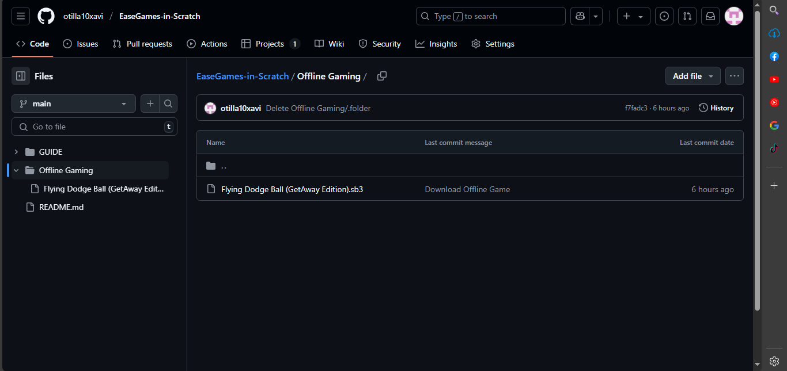
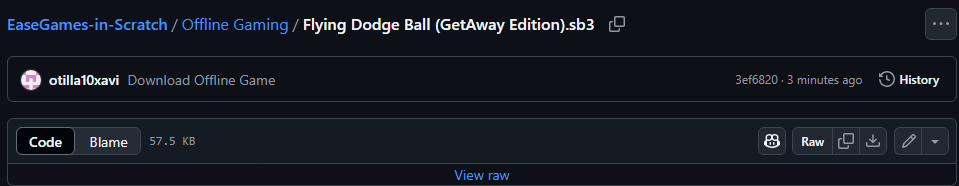
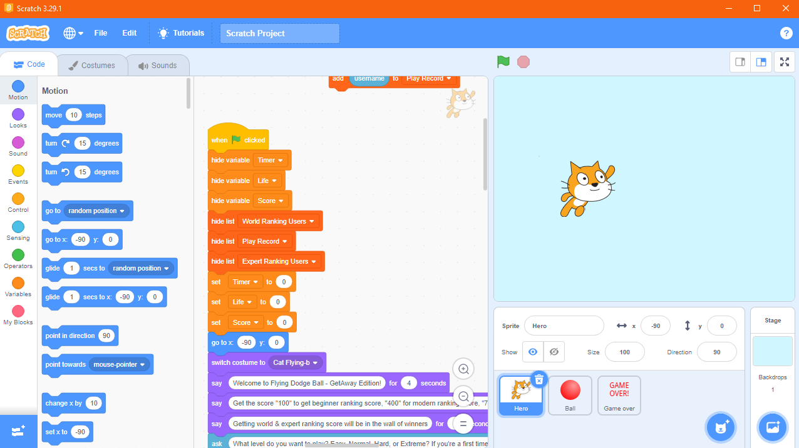

EaseGames introduces new games made with Scratch. You can play them whenever you want. Finish reading this to go on to the user's link.
We want you to play our games and they are so fun. We will still develop EaseGames to have more fun.
1. Download Scratch Offline Editor
2. Open Offline Gaming
3. Choose any preffered game you want to download

3. Click the "View Raw" button.

4. Use Scratch Offline Editor to view the games.

Your progress is finished. Now play anytime.
1. Remixing
2. Viewing secret records
3. Deleting or changing blocks (purposes) of any game
1. Avoid remixing
2. Do not share the game directly on Scratch link. Prefer sending the GitHub link instead.
3. Do not open "See inside" to edit or download the game. If you want to download, prefer using the steps on section "How to Play a Game Without Internet?" instead
Apologies,
EaseGames is a just a new gaming software and not yet a modern "Scratcher". If EaseGames became a modern "Scratcher", you will see the credits here.
EaseGames uses Scratch to make perfect games for you. It's still developing, although, not enough games to play. Well, still, do not leave us! Because in the future, EaseGames has grown to a bigger EaseGames.
EaseGames is a newly created gaming software in Scratch, as you can see in the profile page, EaseGames is still a new "Scratcher".
EaseGames was created on April 24, 2025. It's very new, isn't it?
Continue supporting and playing our games, we would know how many people tried our game.
When users support EaseGames, they will help us in growing our EaseGames software.
Thank you, because with no EaseGames, no new games in the future